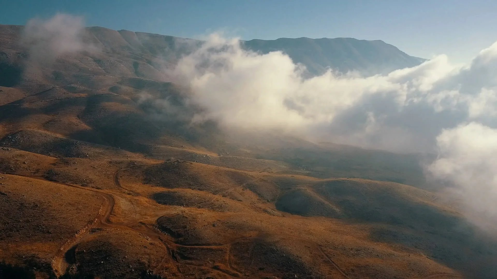
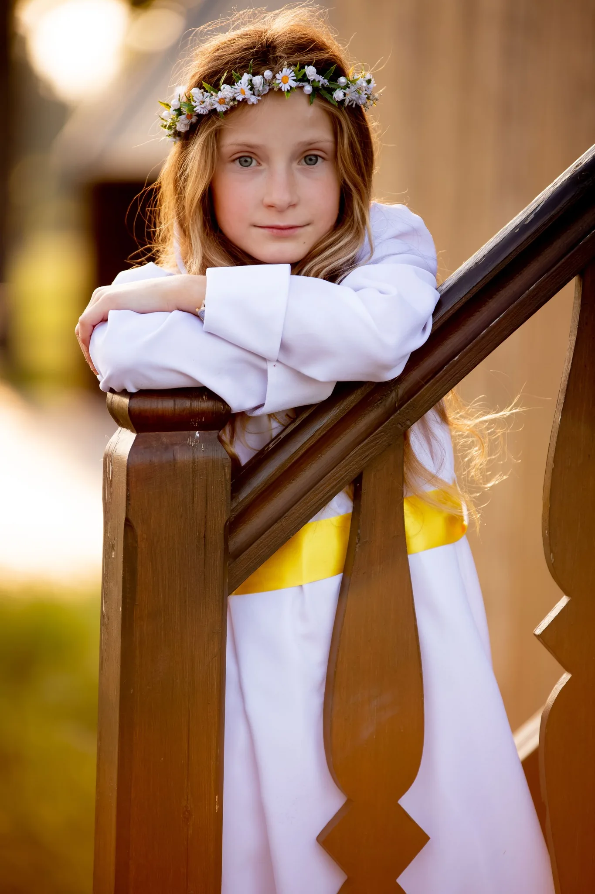
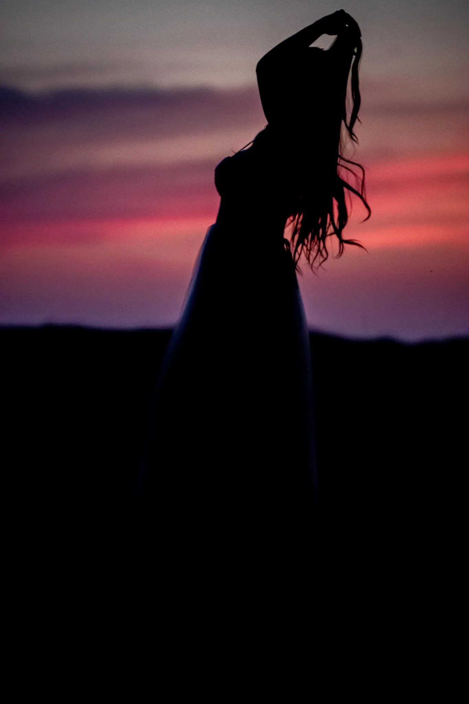
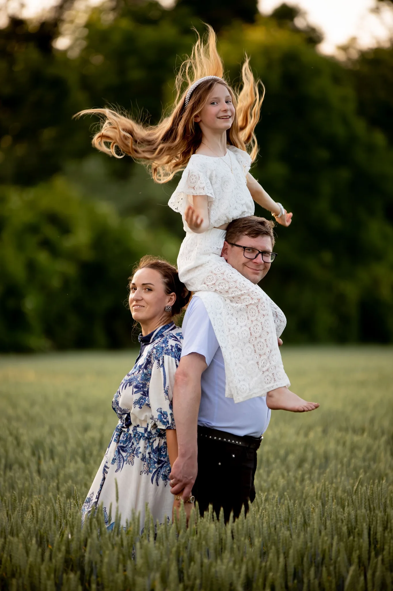
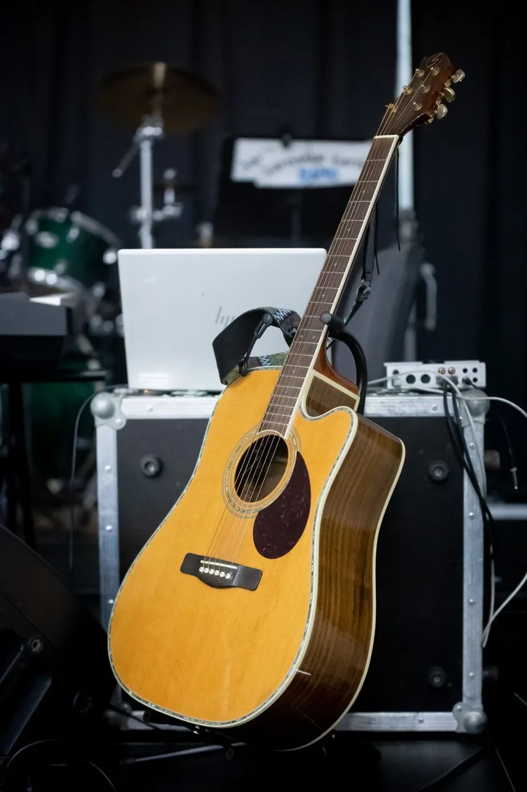

emocje | wspomienia | radość
Czym się zajmujemy?
Od prawie 20 lat fotografujemy emocje i Wasze ważne chwile, a od kilku lat robimy również sesje wizerunkowe oraz produktowe.
Zajmujemy się realizacją materiałów wideo, również tych w wyjątkowych ujęciach z powietrza.
KIM jesteśmy?
Fotorar to rodzinne studio fotografii i reklamy, działające na terenie całej Polski, już prawie 20 lat.
Z wielką radością realizujemy projekty, które nasi Kliencie nam zlecają i za każdym razem jesteśmy niezmiernie szczęśliwi, że obdarzyliście nas zaufaniem!
Zajmujemy się głównie fotografią okolicznościową, wizerunkową i produktową.


fotografia
okazjonalna
Nie ma nic piękniejszego niż wspomnienia, które można zatrzymać na zdjęciach. W Fotorar z czułością i uważnością fotografujemy najważniejsze chwile w życiu – śluby, wesela, komunie, chrzty, jubileusze, urodziny i wiele innych wyjątkowych wydarzeń.
Każde spotkanie, każdy uśmiech, każdy gest ma dla nas znaczenie. Uważnie obserwujemy, by uchwycić emocje i detale, które tworzą niepowtarzalną historię tego dnia.
Działamy lokalnie – realizujemy reportaże i sesje okolicznościowe w Kobylinie, Pępowie, Krotoszynie, Ostrowie i okolicznych miejscowościach.
Każde spotkanie, każdy uśmiech, każdy gest ma dla nas znaczenie. Uważnie obserwujemy, by uchwycić emocje i detale, które tworzą niepowtarzalną historię tego dnia.
Działamy lokalnie – realizujemy reportaże i sesje okolicznościowe w Kobylinie, Pępowie, Krotoszynie, Ostrowie i okolicznych miejscowościach.



fotografia
modelingowa
wizerunkowa
Fotografia modelingowa to dla nas coś znacznie więcej niż tylko ujęcia — to opowieść o człowieku, emocjach i charakterze.
Pomagamy wydobyć naturalność, energię i autentyczność – bo wierzymy, że właśnie w nich kryje się prawdziwe piękno.
Realizujemy sesje modelingowe i wizerunkowe w Kobylinie, Pępowie, Krotoszynie, Ostrowie i okolicach. Dbamy o światło, detale i atmosferę podczas zdjęć, aby każda fotografia oddawała prawdę o osobie, która staje przed naszym aparatem. To więcej niż praca – to nasza pasja i sposób patrzenia na ludzi.
Pomagamy wydobyć naturalność, energię i autentyczność – bo wierzymy, że właśnie w nich kryje się prawdziwe piękno.
Realizujemy sesje modelingowe i wizerunkowe w Kobylinie, Pępowie, Krotoszynie, Ostrowie i okolicach. Dbamy o światło, detale i atmosferę podczas zdjęć, aby każda fotografia oddawała prawdę o osobie, która staje przed naszym aparatem. To więcej niż praca – to nasza pasja i sposób patrzenia na ludzi.



wyjątkowe sesje rodzinne
W Fotorar wierzymy, że najpiękniejsze wspomnienia to te, które tworzycie razem – dlatego z ogromną przyjemnością realizujemy sesje rodzinne, pełne emocji, bliskości i ciepła.Nie ustawiamy sztucznych kadrów – stwarzamy przestrzeń, w której możecie być po prostu sobą.
To w naturalnych gestach, uśmiechach i spojrzeniach kryje się prawdziwa magia.
Wykonujemy rodzinne sesje zdjęciowe w Kobylinie, Pępowie, Krotoszynie, Ostrowie i okolicach, w plenerze, w domowym zaciszu lub w naszym studiu.
Każda sesja to dla nas wyjątkowa historia – pełna miłości, autentyczności i chwil, które warto zachować na zawsze.
To w naturalnych gestach, uśmiechach i spojrzeniach kryje się prawdziwa magia.
Wykonujemy rodzinne sesje zdjęciowe w Kobylinie, Pępowie, Krotoszynie, Ostrowie i okolicach, w plenerze, w domowym zaciszu lub w naszym studiu.
Każda sesja to dla nas wyjątkowa historia – pełna miłości, autentyczności i chwil, które warto zachować na zawsze.





fotografia produktowa
Każdy produkt ma swoją historię — a naszym zadaniem jest opowiedzieć ją światłem i kadrem. W Fotorar zajmujemy się fotografią produktową, która łączy estetykę z funkcjonalnością. Tworzymy zdjęcia, które przyciągają wzrok, budzą emocje i pomagają sprzedawać.
Niezależnie od tego, czy fotografujemy biżuterię, kosmetyki, rękodzieło czy sprzęt – każde ujęcie dopracowujemy w najmniejszym szczególe. Wierzymy, że dobre zdjęcie potrafi zbudować zaufanie do marki.
Niezależnie od tego, czy fotografujemy biżuterię, kosmetyki, rękodzieło czy sprzęt – każde ujęcie dopracowujemy w najmniejszym szczególe. Wierzymy, że dobre zdjęcie potrafi zbudować zaufanie do marki.

chwytaj chwile
Zawsze gdy tylko możesz - łap chwile.
Zdjęciem, wspomnieniem, filmem.
Wygraweruj gdziekolwiek każdą ważną chwilę,
tak, by została,
nawet gdy pamięć zacznie zawodzić.